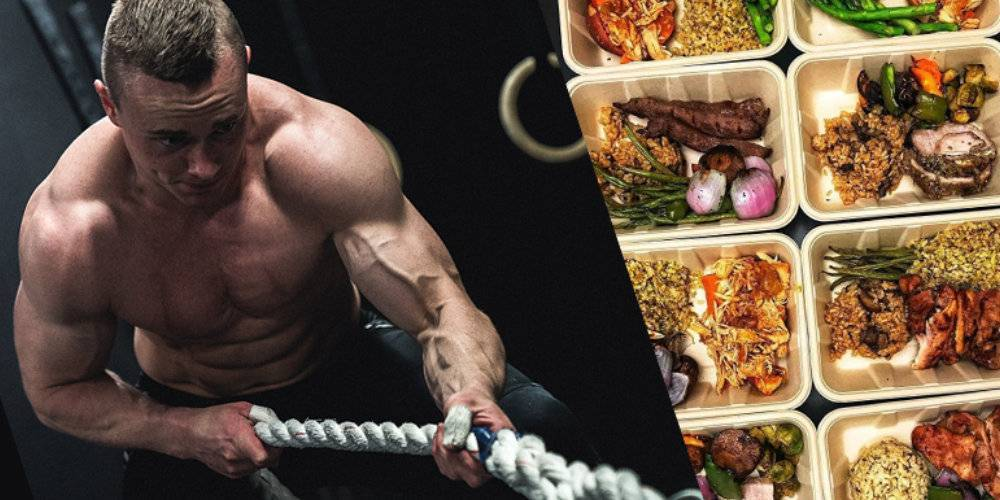

Питание
Питание для набора мышечной массы

Питание для набора мышечной массы – правильное соотношение нутриентов для быстрого восстановления мускулатуры после тренировки и ее дальнейшего увеличения.
Вопрос привлекательной фигуры для мужчин стоит не менее остро, чем для женщин. Красивое стройное тело, подтянутые мышцы не только привлекают внимание противоположного пола, но и свидетельствуют о здоровом образе жизни человека. Вне зависимости от места проведения тренировок, в спортзале или в домашних условиях, занимаясь интенсивными упражнениями для развития мускулатуры, не стоит преуменьшать важность правильного питания.
Рост силы, объема мышечной массы зависит от количества расходуемой энергии и правильности употребления «строительных материалов» для ее восстановления.
Тяжелые физические упражнения способствуют повышенному сжиганию углеводов и интенсивному распаду белка. Как следствие, для поддержания хорошего самочувствия и восполнения дефицита энергии, нужно соблюдать спортивное питание, основанное на оптимальном соотношении БЖУ. Если не компенсировать этот расход, силы спортсмена уменьшатся и он начнет интенсивно худеть.
Рекомендации для роста мышц
Рассмотрим базовые правила, которых должен придерживаться каждый атлет, желающий увеличить мускулатуру.
1. Сжигать углеводы тренировками. Ежедневное потребление на 20% больше дневной нормы калорий обеспечит активный рост мышц. Для минимизации отложения жира под кожу, принимать углеводные коктейли следует за 2ч. до тренировки и через 1,5ч. после нее.
2. Помнить о взаимосвязи «жир-тестостерон». Исключение животных триглицеридов из меню спортсмена неизбежно приведет к снижению выработки мужского полового гормона, что негативно скажется на развитии мышечной массы. Помимо этого, недостаток жиров уменьшает на 10% выносливость, на 12% работоспособность атлета. А также вызывает падение молочной кислоты в период выполнения силовых упражнений, что является главным признаком неэффективности протекания обменных процессов в организме: увеличения доли вредного холестерола, потере и не усваиванию витаминов, микроэлементов.
Суточная норма потребления триглицеридов для интенсивного развития мышечной массы составляет 80-100г. Превышение данного показателя в несколько раз приводит к запуску механизма отложения подкожного жира. Поэтому эффективное питание для развития мускулатуры запрещает употребление излишне жирных продуктов (соленые снеки, чипсы, маргарин, майонез, сухарики, копчености, спред).
Тяжелые физические упражнения способствуют повышенному сжиганию углеводов и интенсивному распаду белка. Как следствие, для поддержания хорошего самочувствия и восполнения дефицита энергии, нужно соблюдать спортивное питание, основанное на оптимальном соотношении БЖУ. Если не компенсировать этот расход, силы спортсмена уменьшатся и он начнет интенсивно худеть.
3. Уменьшить кардионагрузки. Для поддержания выносливости, укрепления сердца достаточно ограничиться вело тренировками или 1-2 пробежками в неделю по 30 минут каждая. Пренебрежение данным условием может привести к «сжиганию» мышц.
4. Уменьшить количество повторений на одно упражнение. Программа тренировок на набор мышечной массы рассчитана не более, чем на 50 минут. При этом, важно выполнять до 12 повторений в одно упражнение. Количество подходов не должно превышать 5 раз.
5. Сбалансированное питание (витамины, минералы, аминокислоты, БЖУ). Идеальное соотношение нутриентов для увеличения мускулатуры:
- жиры (полиненасыщенные жирные кислоты) – 10-20% от дневного рациона;
- углеводы (медленные или сложные) – 50-60%;
- белки – 30-35%.
6. Не голодать. Кушать нужно за 1,5-2ч. до занятий, предпочтительно углеводистые продукты и через 1ч. после физической нагрузки. В противном случае тренировка на голодный желудок приведет к тому, что для восполнения потери энергии организм начнет интенсивно сжигать запасы белков, необходимые для роста мышц.
Подкрепляясь, важно контролировать количество съедаемых продуктов – не стоит переедать. После тренировки нельзя оставаться голодным, нужно подпитать организм продуктами, богатыми на минералы, витамины. В качестве легкого перекуса подойдут банан, орехи, творог, протеиновый коктейль, булочка с молоком, кефир, гейнер, протеин, сэндвич с джемом. А спустя 1,5ч. нужно хорошо поесть, предпочтительно белковую пищу, для восстановления, увеличения мышц, иначе истощения организма не избежать.
7. Обильно пить жидкость. Ежедневно объем выпиваемой воды в период интенсивных тренировок должен составлять 2,5-3л. Нехватка жидкости приводит к обезвоживанию организма, уменьшению силы мышц на 20% и замедлению роста мускулатуры.
8. Отдыхать. Рост мышечной массы происходит не в период интенсивной нагрузки, а во время отдыха организма. Растягивание и рост мускулатуры осуществляется в течение 3-7дней. На протяжении данного периода стоит соблюдать режим питания и чередовать нагрузку, отдых.
Для новичков период восстановления мышц после силовых упражнений – 72 ч., для тренирующихся – 36ч. Здоровый сон должен составлять, как минимум, 8ч. в день. Немаловажно избегать стрессов, поскольку нервозность приводит к повышению уровня кортизола в организме, за счет которого происходят жировые отложения и потеря мышц. Несоблюдение режима отдыха и питания способствует накачиванию мускулатуры без увеличения объема.
9. Периодически изменять программу тренировок (раз в два месяца). Например, вводить новые упражнения, брать дополнительный вес, изменять количество повторений.
10. Идти к своей цели. Не стоит гулять по спортзалу без дела. Для достижения желаемого результата нужно максимально сконцентрироваться на выполнении упражнения.
Практическое видео
Соблюдение вышеописанных ключевых правил для набора сухой мышечной массы – эффективный путь к здоровому накачанному телу